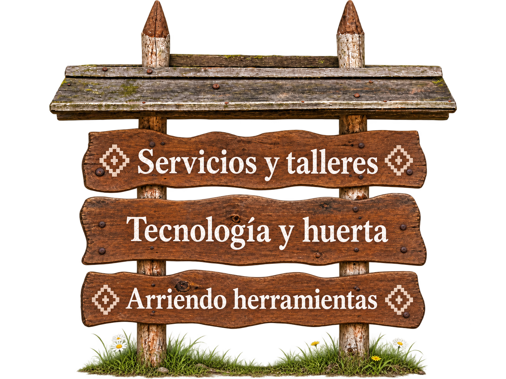

Servicios · Oficios · Kimün
Tecnología y oficios al servicio de la tierra

Asesoría y Contratación
Cotiza nuestros servicios
¿Necesitas contratar nuestros servicios técnicos o asesoría agroecológica? Escríbenos directamente y evaluaremos tu terreno.
equipolasnanas.aiep@gmail.com